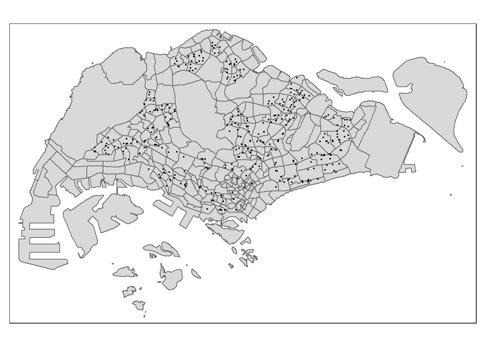

pacman::p_load(tidyverse, sf, httr,
tmap,dplyr)In-class_EX4
In-class Exercise 4: Preparing Spatial Interaction Modelling Variables
#Getting Started
#Counting number of schools in each URA Planning Subzone
##Geocoding using SLA API the found data table will joined with the initial csv data table by using a unique identifier (i.e. POSTAL) common to both data tables. The output data table will then save as an csv file called found.
#url<-"https://www.onemap.gov.sg/api/common/elastic/search"
#csv<-read_csv("data/aspatial/Generalinformationofschools.csv")
#postcodes<-csv$`postal_code`
#found<-data.frame()
#not_found<-data.frame()
#for(postcode in postcodes){
# query<-list('searchVal'=postcode,'returnGeom'='Y','getAddrDetails'='Y','pageNum'='1'#)
# res<- GET(url,query=query)
# if((content(res)$found)!=0){
# found<-rbind(found,data.frame(content(res))[4:13])
# } else{
# not_found = data.frame(postcode)
# }
#}#merged = merge(csv, found, by.x = 'postal_code', by.y = 'results.POSTAL', all = TRUE)
#write.csv(merged, file = "data/aspatial/schools.csv")
#write.csv(not_found, file = "data/aspatial/not_found.csv")#Tidying schools data.frame you will import schools.csv into R environment and at the same time tidying the data by selecting only the necessary fields as well as rename some fields.
schools <- read_csv("data/aspatial/schools.csv") %>%
rename(latitude = "results.LATITUDE",
longitude = "results.LONGITUDE")%>%
select(postal_code, school_name, latitude, longitude)New names:
Rows: 350 Columns: 41
── Column specification
──────────────────────────────────────────────────────── Delimiter: "," chr
(35): school_name, url_address, address, telephone_no, telephone_no_2, f... dbl
(6): ...1, postal_code, results.X, results.Y, results.LATITUDE, results...
ℹ Use `spec()` to retrieve the full column specification for this data. ℹ
Specify the column types or set `show_col_types = FALSE` to quiet this message.
• `` -> `...1`Converting an aspatial data into sf tibble data.frame
you will convert schools tibble data.frame data into a simple feature tibble data.frame called schools_sf by using values in latitude and longitude fields.
schools_sf <- st_as_sf(schools,
coords = c("longitude", "latitude"),
crs=4326) %>%
st_transform(crs = 3414)##Plotting a point simple feature layer
mpsz <- st_read(dsn = "data/geospatial/",
layer = "MPSZ-2019") %>%
st_transform(crs = 3414)Reading layer `MPSZ-2019' from data source
`D:\zzc\ISSS624\In-class_EX\In-class_EX4\data\geospatial' using driver `ESRI Shapefile'
Simple feature collection with 332 features and 6 fields
Geometry type: MULTIPOLYGON
Dimension: XY
Bounding box: xmin: 103.6057 ymin: 1.158699 xmax: 104.0885 ymax: 1.470775
Geodetic CRS: WGS 84tmap_options(check.and.fix = TRUE)
tm_shape(mpsz) +
tm_polygons() +
tm_shape(schools_sf) +
tm_dots() Warning: The shape mpsz is invalid. See sf::st_is_valid
##Performing point-in-polygon count process we will count the number of schools located inside the planning subzones.
mpsz$`SCHOOL_COUNT`<- lengths(
st_intersects(
mpsz, schools_sf)) summary(mpsz$SCHOOL_COUNT) Min. 1st Qu. Median Mean 3rd Qu. Max.
0.000 0.000 0.000 1.054 2.000 12.000 Data Integration and Final Touch-up
business_sf <- st_read(dsn = "data/geospatial",
layer = "Business")Reading layer `Business' from data source
`D:\zzc\ISSS624\In-class_EX\In-class_EX4\data\geospatial' using driver `ESRI Shapefile'
Simple feature collection with 6550 features and 3 fields
Geometry type: POINT
Dimension: XY
Bounding box: xmin: 3669.148 ymin: 25408.41 xmax: 47034.83 ymax: 50148.54
Projected CRS: SVY21 / Singapore TMtmap_options(check.and.fix = TRUE)
tm_shape(mpsz) +
tm_polygons() +
tm_shape(business_sf) +
tm_dots()Warning: The shape mpsz is invalid. See sf::st_is_valid
mpsz$`BUSINESS_COUNT`<- lengths(
st_intersects(
mpsz, business_sf))
summary(mpsz$BUSINESS_COUNT) Min. 1st Qu. Median Mean 3rd Qu. Max.
0.00 0.00 2.00 19.73 13.00 307.00 Now, it is time for us to bring in the flow_data.rds saved after Hands-on Exercise 3.
flow_data <- read_rds("data/rds/flow_data_tidy.rds")
flow_dataSimple feature collection with 14734 features and 12 fields
Geometry type: LINESTRING
Dimension: XY
Bounding box: xmin: 5105.594 ymin: 25813.33 xmax: 49483.22 ymax: 49552.79
Projected CRS: SVY21 / Singapore TM
First 10 features:
ORIGIN_SZ DESTIN_SZ MORNING_PEAK dist ORIGIN_AGE7_12 ORIGIN_AGE13_24
1 AMSZ01 AMSZ01 1998 50.0000 310 710
2 AMSZ01 AMSZ02 8289 810.4491 310 710
3 AMSZ01 AMSZ03 8971 1360.9294 310 710
4 AMSZ01 AMSZ04 2252 840.4432 310 710
5 AMSZ01 AMSZ05 6136 1076.7916 310 710
6 AMSZ01 AMSZ06 2148 805.2979 310 710
7 AMSZ01 AMSZ07 1620 1798.7526 310 710
8 AMSZ01 AMSZ08 1925 2576.0199 310 710
9 AMSZ01 AMSZ09 1773 1204.2846 310 710
10 AMSZ01 AMSZ10 63 1417.8035 310 710
ORIGIN_AGE25_64 DESTIN_AGE7_12 DESTIN_AGE13_24 DESTIN_AGE25_64 SCHOOL_COUNT
1 2780 310.00 710.00 2780.00 0.99
2 2780 1140.00 2770.00 15700.00 2.00
3 2780 1010.00 2650.00 14240.00 2.00
4 2780 980.00 2000.00 11320.00 1.00
5 2780 810.00 1920.00 9650.00 3.00
6 2780 1050.00 2390.00 12460.00 2.00
7 2780 420.00 1120.00 3620.00 0.99
8 2780 390.00 1150.00 4350.00 0.99
9 2780 1190.00 3260.00 13350.00 3.00
10 2780 0.99 0.99 0.99 1.00
RETAIL_COUNT geometry
1 1.00 LINESTRING (29501.77 39419....
2 0.99 LINESTRING (29501.77 39419....
3 6.00 LINESTRING (29501.77 39419....
4 0.99 LINESTRING (29501.77 39419....
5 0.99 LINESTRING (29501.77 39419....
6 0.99 LINESTRING (29501.77 39419....
7 1.00 LINESTRING (29501.77 39419....
8 117.00 LINESTRING (29501.77 39419....
9 0.99 LINESTRING (29501.77 39419....
10 20.00 LINESTRING (29501.77 39419....Notice that this is an sf tibble data.frame and the features are polylines linking the centroid of origins and destination planning subzone.
mpsz_tidy <- mpsz %>%
st_drop_geometry() %>%
select(SUBZONE_C, SCHOOL_COUNT, BUSINESS_COUNT)# Inspect the structure of mpsz
str(mpsz)Classes 'sf' and 'data.frame': 332 obs. of 9 variables:
$ SUBZONE_N : chr "MARINA EAST" "INSTITUTION HILL" "ROBERTSON QUAY" "JURONG ISLAND AND BUKOM" ...
$ SUBZONE_C : chr "MESZ01" "RVSZ05" "SRSZ01" "WISZ01" ...
$ PLN_AREA_N : chr "MARINA EAST" "RIVER VALLEY" "SINGAPORE RIVER" "WESTERN ISLANDS" ...
$ PLN_AREA_C : chr "ME" "RV" "SR" "WI" ...
$ REGION_N : chr "CENTRAL REGION" "CENTRAL REGION" "CENTRAL REGION" "WEST REGION" ...
$ REGION_C : chr "CR" "CR" "CR" "WR" ...
$ geometry :sfc_MULTIPOLYGON of length 332; first list element: List of 1
..$ :List of 1
.. ..$ : num [1:300, 1:2] 33223 33223 33222 33222 33221 ...
..- attr(*, "class")= chr [1:3] "XY" "MULTIPOLYGON" "sfg"
$ SCHOOL_COUNT : int 0 1 0 0 0 0 0 0 0 0 ...
$ BUSINESS_COUNT: int 0 6 4 5 7 0 0 0 0 1 ...
- attr(*, "sf_column")= chr "geometry"
- attr(*, "agr")= Factor w/ 3 levels "constant","aggregate",..: NA NA NA NA NA NA NA NA
..- attr(*, "names")= chr [1:8] "SUBZONE_N" "SUBZONE_C" "PLN_AREA_N" "PLN_AREA_C" ...we will append SCHOOL_COUNT and BUSINESS_COUNT fields from mpsz_tidy data.frame into flow_data sf tibble data.frame by using the code chunk below.
flow_data <- flow_data %>%
left_join(mpsz_tidy,
by = c("DESTIN_SZ" = "SUBZONE_C")) %>%
rename(TRIPS = MORNING_PEAK,
DIST = dist)##Checking for variables with zero values
summary(flow_data) ORIGIN_SZ DESTIN_SZ TRIPS DIST
Length:14734 Length:14734 Min. : 1 Min. : 50
Class :character Class :character 1st Qu.: 14 1st Qu.: 3346
Mode :character Mode :character Median : 76 Median : 6067
Mean : 1021 Mean : 6880
3rd Qu.: 426 3rd Qu.: 9729
Max. :232187 Max. :26136
ORIGIN_AGE7_12 ORIGIN_AGE13_24 ORIGIN_AGE25_64 DESTIN_AGE7_12
Min. : 0.99 Min. : 0.99 Min. : 0.99 Min. : 0.99
1st Qu.: 240.00 1st Qu.: 440.00 1st Qu.: 2200.00 1st Qu.: 240.00
Median : 700.00 Median : 1350.00 Median : 6810.00 Median : 720.00
Mean :1031.86 Mean : 2268.84 Mean :10487.62 Mean :1033.40
3rd Qu.:1480.00 3rd Qu.: 3260.00 3rd Qu.:15770.00 3rd Qu.:1500.00
Max. :6340.00 Max. :16380.00 Max. :74610.00 Max. :6340.00
DESTIN_AGE13_24 DESTIN_AGE25_64 SCHOOL_COUNT.x RETAIL_COUNT
Min. : 0.99 Min. : 0.99 Min. : 0.990 Min. : 0.99
1st Qu.: 460.00 1st Qu.: 2200.00 1st Qu.: 0.990 1st Qu.: 0.99
Median : 1420.00 Median : 7030.00 Median : 1.000 Median : 3.00
Mean : 2290.35 Mean :10574.46 Mean : 1.987 Mean : 16.47
3rd Qu.: 3260.00 3rd Qu.:15830.00 3rd Qu.: 2.000 3rd Qu.: 12.00
Max. :16380.00 Max. :74610.00 Max. :12.000 Max. :307.00
SCHOOL_COUNT.y BUSINESS_COUNT geometry
Min. : 0.000 Min. : 0.00 LINESTRING :14734
1st Qu.: 0.000 1st Qu.: 0.00 epsg:3414 : 0
Median : 1.000 Median : 3.00 +proj=tmer...: 0
Mean : 1.583 Mean : 16.17
3rd Qu.: 2.000 3rd Qu.: 12.00
Max. :12.000 Max. :307.00 In view of this, code chunk below will be used to replace zero values to 0.99.
flow_data <- flow_data %>%
select(everything()) %>%
rename(SCHOOL_COUNT = SCHOOL_COUNT.y) flow_data$SCHOOL_COUNT <- ifelse(
flow_data$SCHOOL_COUNT == 0,
0.99, flow_data$SCHOOL_COUNT)
flow_data$BUSINESS_COUNT <- ifelse(
flow_data$BUSINESS_COUNT == 0,
0.99, flow_data$BUSINESS_COUNT)summary(flow_data) ORIGIN_SZ DESTIN_SZ TRIPS DIST
Length:14734 Length:14734 Min. : 1 Min. : 50
Class :character Class :character 1st Qu.: 14 1st Qu.: 3346
Mode :character Mode :character Median : 76 Median : 6067
Mean : 1021 Mean : 6880
3rd Qu.: 426 3rd Qu.: 9729
Max. :232187 Max. :26136
ORIGIN_AGE7_12 ORIGIN_AGE13_24 ORIGIN_AGE25_64 DESTIN_AGE7_12
Min. : 0.99 Min. : 0.99 Min. : 0.99 Min. : 0.99
1st Qu.: 240.00 1st Qu.: 440.00 1st Qu.: 2200.00 1st Qu.: 240.00
Median : 700.00 Median : 1350.00 Median : 6810.00 Median : 720.00
Mean :1031.86 Mean : 2268.84 Mean :10487.62 Mean :1033.40
3rd Qu.:1480.00 3rd Qu.: 3260.00 3rd Qu.:15770.00 3rd Qu.:1500.00
Max. :6340.00 Max. :16380.00 Max. :74610.00 Max. :6340.00
DESTIN_AGE13_24 DESTIN_AGE25_64 SCHOOL_COUNT.x RETAIL_COUNT
Min. : 0.99 Min. : 0.99 Min. : 0.990 Min. : 0.99
1st Qu.: 460.00 1st Qu.: 2200.00 1st Qu.: 0.990 1st Qu.: 0.99
Median : 1420.00 Median : 7030.00 Median : 1.000 Median : 3.00
Mean : 2290.35 Mean :10574.46 Mean : 1.987 Mean : 16.47
3rd Qu.: 3260.00 3rd Qu.:15830.00 3rd Qu.: 2.000 3rd Qu.: 12.00
Max. :16380.00 Max. :74610.00 Max. :12.000 Max. :307.00
SCHOOL_COUNT BUSINESS_COUNT geometry
Min. : 0.990 Min. : 0.99 LINESTRING :14734
1st Qu.: 0.990 1st Qu.: 0.99 epsg:3414 : 0
Median : 1.000 Median : 3.00 +proj=tmer...: 0
Mean : 1.987 Mean : 16.47
3rd Qu.: 2.000 3rd Qu.: 12.00
Max. :12.000 Max. :307.00 write_rds(flow_data,
"data/rds/flow_data_tidy.rds")